Astronomia (AST0001) · Curso de Física · UDESC
Gravitação newtoniana e dinâmica orbital
Aula 5 · Capítulo 5 · as três leis de Kepler, deduzidas duas vezes
Prof. Dr. Rafael Camargo Rodrigues de Lima · 2026/2
O que o Capítulo 4 deixou em aberto
- Kepler tirou P² ∝ a³ dos dados de Tycho — e parou aí
- Não sabia de onde vinha a constante K
- Nem por que ela é a mesma para os oito planetas
- Nem o que aconteceria com um corpo que não voltasse
- As três leis eram descrição. Faltava a causa.
Newton publica a resposta em 1687, setenta e oito anos depois da primeira lei.
Vamos percorrer o caminho duas vezes
Travessia 1 — elementar. As leis de Newton, a aceleração centrípeta deduzida geometricamente, o argumento que leva de Kepler à lei do inverso do quadrado, e a constante K calculada para duas massas em órbita circular. Papel e lápis. É a que Newton de fato percorreu.
Travessia 2 — vetorial. Uma única equação de movimento, multiplicada por três coisas diferentes, entrega energia, momento angular e as três leis. Sem supor círculo em momento nenhum.
A segunda é mais elegante e esconde a física atrás da álgebra. Por isso vem depois, e não no lugar da primeira.
Travessia 1 — as três leis de Newton
Tudo o que segue sai de três enunciados e de uma lei de força.
Vale reescrevê-los na forma em que serão usados.
Primeira lei: inércia
O enunciado é vetorial, e isso não é detalhe: constante em módulo, direção e sentido. Um corpo em movimento circular uniforme tem rapidez constante e mesmo assim está acelerado — a direção de v muda. É o caso de todo planeta.
Segunda lei: força é taxa de variação do momento
Escrever a forma completa não é preciosismo: o termo v·dm/dt governa foguetes, estrelas que perdem massa em vento e objetos que acretam de uma companheira. Neste capítulo as massas são constantes.
Terceira lei: ação e reação
A mais subestimada das três, e a que fará mais trabalho aqui: dela virá a simetria entre as duas massas na lei da gravitação, e dela virá a soma m₁+m₂ na terceira lei de Kepler.
Quanto está acelerado um corpo em órbita circular?
Antes da gravitação, um resultado puramente cinemático.
A resposta é v²/r, e vale deduzi-la: o argumento é curto, e ela é o único ingrediente dinâmico de toda a primeira travessia.
Primeiro, um lema
Se |r| é constante, então v ⊥ r.
Produto escalar nulo entre vetores não nulos significa perpendicularidade: em qualquer movimento sobre uma circunferência, a velocidade é tangente. Vale em qualquer número de dimensões e não usa nada além da regra da cadeia.
Duas leituras da mesma figura
Duas posições separadas por um ângulo pequeno θ, percorridas em Δt. Em cima: no espaço, a corda tende ao arco. Embaixo: nas velocidades.
O vetor velocidade gira do mesmo ângulo θ que o raio: dois vetores obtidos girando de 90° duas direções separadas por θ estão eles próprios separados por θ.
E sai a aceleração centrípeta
Nada de gravitação entrou até aqui — só geometria e a definição de aceleração.
Um alerta que economiza confusão
A força centrípeta não é um novo tipo de força. Ela é a resultante — seja lá de que natureza for — que aponta para o centro da trajetória.
Em um carro na curva é o atrito. Em uma pedra girando na corda é a tração. Em um planeta é a gravidade.
Escrever F = mv²/r não diz nada sobre a origem da força: diz apenas quanto ela precisa valer para a trajetória ser aquela.
De Kepler a Newton
Newton percebeu que a mesma força que faz corpos caírem na Terra se estende até a Lua e a mantém em órbita.
A pergunta seguinte é quantitativa: como essa força depende da distância?
A resposta sai de combinar a cinemática recém-deduzida com a terceira lei de Kepler, tratando a órbita como circular.
Os dois ingredientes
A terceira lei entra aqui como fato empírico, do jeito que Kepler a deixou: K é uma constante que depende só das unidades.
A velocidade cai com a raiz da distância
E a força, com o quadrado
Falta a massa do Sol. Ela entra pela terceira lei de Newton: o planeta puxa o Sol com força de mesmo módulo, e o mesmo raciocínio aplicado ao Sol daria F ∝ M/r².
A lei da gravitação universal
Uma única expressão que satisfaça as duas proporcionalidades ao mesmo tempo é o produto. Universal no sentido forte: o mesmo G para a maçã, para a Lua, para Júpiter e para uma galáxia. Cavendish só o mediria em 1798, 111 anos depois dos Principia.
Isso não é um argumento circular?
A pergunta é boa: deduzimos a lei do inverso do quadrado a partir da terceira lei de Kepler, e em seguida vamos deduzir a terceira lei de Kepler a partir dela.
Não é circular porque as duas passagens têm estatutos lógicos diferentes. A primeira é uma inferência: supondo círculos, 1/r² é a forma que reproduz P² ∝ a³. Ela sugere a lei, não a prova. O passo decisivo de Newton foi postular que F = GMm/r² vale entre quaisquer dois corpos, sempre — e então deduzir.
E as consequências vão muito além do que entrou: a dedução dispensa a hipótese de círculo, produz as órbitas abertas e corrige a própria terceira lei. Uma teoria se testa pelo que prevê além daquilo de que foi construída.
A constante K, deduzida
Kepler mediu K. Agora podemos calculá-la.
Dois corpos de massas m₁ e m₂ em órbitas circulares em torno do centro de massa comum, raios r₁ e r₂, mesmo período P. A separação é a = r₁ + r₂, e a definição de centro de massa impõe m₁r₁ = m₂r₂.
O arranjo
Repare na assimetria: a força gravitacional depende da separação; as centrípetas, de cada raio individual.
A massa some do próprio lado
m₁ cancela dos dois lados — e é exatamente por isso que a órbita mede a massa do outro corpo, nunca a sua própria. Fazendo o mesmo com F₂ sai a relação simétrica.
Somando as duas
Dividir uma pela outra, em vez de somar, recupera m₂/m₁ = r₁/r₂ — a definição de centro de massa. Boa aferição de que nada se perdeu.
A constante de Kepler não é constante
- Ela depende da soma das massas do par
- Só parece universal porque, para todo planeta, M☉+m ≃ M☉ com erro < 1/1000
- É esse termo que explica o déficit de P²/a³ de Júpiter, na tabela do Capítulo 4
- E é ele que dá utilidade à lei: se K fosse mesmo uma constante da natureza, a terceira lei não mediria nada
Ao contrário, é um instrumento de medida
Duas grandezas geométricas — um tamanho e um tempo — entregam uma massa em quilogramas. A segunda forma reaparece o curso inteiro: estrelas no centro galáctico, gás em discos, matéria em aglomerados.
O sistema de unidades em que a conta some
Períodos em anos, distâncias em UA, massas em massas solares. É nessa forma que o laboratório deste capítulo é feito: entra a e P, sai massa, sem nenhuma constante física pelo caminho.
Exemplo: a massa de Marte, a partir de Deimos
PD = 1,262 dias, aD = 23 500 km. Compare com o par Terra–Lua: PL = 27,3 dias, aL = 384 000 km.
Tabelado: 0,107 M⊕. Em massas solares, comparando com o par Sol–Terra, sai 3,2×10⁻⁷ M☉. Repare no que não foi preciso: nem G, nem a massa da Terra, nem converter unidades. Toda medida de massa em astronomia é, no fundo, uma comparação entre duas órbitas.
Travessia 2 — uma equação, três multiplicações
Tudo até aqui supôs órbita circular. Nada do que segue supõe.
Vamos obter uma única equação de movimento e multiplicá-la por três coisas diferentes: escalarmente por ṙ, vetorialmente por r, e vetorialmente pelo vetor que sair da segunda operação. Cada produto entrega uma lei de conservação.
Não há truque adicional: é sempre a mesma equação, vista de ângulos diferentes.
As duas equações de movimento
Com r = rm − rM, o vetor que aponta do corpo central para o que orbita.
A potência r³ no denominador aparece porque é o vetor r, e não o versor, que está no numerador. A segunda equação é a primeira lida pela terceira lei de Newton.
Somar elimina a força; subtrair elimina o referencial
Somando: o centro de massa move-se em linha reta, e o problema perde três graus de liberdade. Dividindo cada uma pela sua massa e subtraindo: a equação do movimento relativo — idêntica à de uma única partícula orbitando um centro fixo de massa Mtot. Dois corpos viraram um.
Multiplicando por ṙ: energia
Os dois termos são derivadas totais disfarçadas. A identidade r·ṙ = rṙ será usada de novo adiante. O sinal de ε decide o destino: negativo, o corpo volta sempre; nulo ou positivo, não volta.
Explorar: vis-viva e as quatro cônicas
Lance sempre do mesmo ponto e mude só a rapidez. À direita, a parábola cai em cima da curva de escape.
Multiplicando por r: momento angular
O termo da força morre porque o produto vetorial de um vetor por ele mesmo é zero — é aqui que entra a informação de que a força é central. Como ℓ é constante e perpendicular a r, o movimento é plano. Só se usou que a força é central; a forma 1/r² não entrou.
Multiplicando por ℓ: a identidade do duplo produto
(a×b)×c = (a·c)b − (b·c)a
Com a = r, b = ṙ e c = r. Na última passagem entra de novo r·ṙ = rṙ.
O colchete é uma derivada exata
É a derivada do versor radial. E o lado esquerdo também é derivada, porque ℓ é constante. A equação toda é uma igualdade entre duas derivadas — e integra-se de imediato. β é o vetor constante de integração.
Onde está β?
O lado esquerdo, ṙ×ℓ, é perpendicular a ℓ — é um produto vetorial que tem ℓ como fator.
O primeiro termo do lado direito também é, por ser paralelo a r, que está no plano da órbita.
A diferença entre os dois é β. Logo β também está no plano da órbita.
Temos agora dois vetores constantes, ℓ e β, e um escalar constante, ε. Três constantes de movimento de uma equação só.
Multiplicando (A) por r
O lado esquerdo se simplifica com a identidade do produto misto: a·(b×c) = (a×b)·c. Sobra ℓ², e do outro lado a projeção de β sobre r.
E a primeira lei emerge
Não foi suposta em momento nenhum: ela é a solução. Como r é mínimo quando cos θ = 1, o vetor β aponta para o pericentro — é a direção do periélio escrita como constante de movimento. A menos do fator GMtot, é o vetor de Laplace–Runge–Lenz.
E veio de brinde o que Kepler não podia saber
- e = 0 — circunferência
- 0 < e < 1 — elipse: movimento cíclico
- e = 1 — parábola: o limite exato do escape
- e > 1 — hipérbole: passa uma vez e não volta
A solução não se limita a curvas fechadas. É a mesma família que se obtém seccionando um cone com um plano — daí o nome.
A excentricidade é energia disfarçada
Tomando o módulo ao quadrado de β = ṙ×ℓ − GMtotr̂ e reagrupando, aparece exatamente a combinação que define ε. A correspondência é exata: e < 1 ⟺ ε < 0 (ligada), e = 1 ⟺ ε = 0 (escape), e > 1 ⟺ ε > 0 (livre).
A segunda lei: velocidade em polares
Uma componente radial, que aproxima ou afasta, e uma tangencial, que gira. A área varrida é a de um triângulo de lados r e dr — e sua taxa é metade de ℓ, que é constante. Áreas iguais em tempos iguais.
A terceira lei, sem supor círculo
Integrando a taxa areal ao longo de um período, a área total é a da elipse inteira, πab. O fator (1−e²) cancela: a excentricidade sumiu. Um cometa e um asteroide de mesmo semieixo maior voltam juntos.
O que acabou de acontecer
Uma equação, multiplicada por três coisas diferentes, produziu as três leis que Kepler levou vinte anos extraindo de tabelas de observação.
E produziu mais do que elas: as órbitas abertas, a relação entre excentricidade e energia, e a correção de massa que a lei empírica não podia conter.
É o exemplo mais limpo, em todo o curso, do que significa explicar em vez de descrever.
Energia orbital e vis-viva
Substituindo ℓ² = GMtota(1−e²) na relação entre e e ε, o fator (1−e²) cancela e sobra −GM/2a: a energia depende só do semieixo maior, como o período. Igualando às duas expressões de ε sai a vis-viva.
A velocidade de escape
Escapar custa exatamente √2 vezes a velocidade circular. Para a Terra, 11,2 km/s; para uma anã branca de massa solar e raio terrestre, 6 455 km/s — 2% da velocidade da luz.
Onde o corpo está em cada instante
A anomalia excêntrica E vem da projeção da elipse sobre o círculo circunscrito. A equação de Kepler é transcendental: não há solução fechada. Resolve-se por Newton-Raphson em poucas iterações — é o cálculo que toda efeméride faz milhões de vezes por dia.
Binárias: a órbita vira massa
Em um sistema binário cada estrela descreve uma elipse em torno do centro de massa. A geometria observada já entrega a razão das massas; a terceira lei entrega a soma.
Com as duas, saem as massas separadas.
É a única forma de obter massa estelar sem hipótese de modelo.
Razão, amplitude e função de massa
O fator sen i aparece porque só se mede a projeção na linha de visada — é a limitação fundamental do método. Tudo do lado direito de f(m) é observável: se apenas uma componente é vista, f(m) é um limite inferior para m₂, e quando ele excede a massa máxima de uma estrela de nêutrons, a companheira invisível não pode ser outra coisa.
As leis de Kepler, do Capítulo 4
Painel (b): as duas famílias caem sobre retas de inclinação 3/2 com coeficientes diferentes. Agora sabemos o que o coeficiente é: 4π² sobre G vezes a soma das massas.
O teorema do virial
Para um sistema ligado em equilíbrio, a média temporal de d²I/dt² se anula. Se o sistema perde energia, E diminui — e portanto K aumenta. Ele esquenta ao esfriar.
Por que isso importa
- Uma estrela que irradia contrai e aquece
- Um aglomerado que evapora estrelas fica mais compacto e mais quente
- É por isso que estrelas não atingem equilíbrio térmico com o meio
- E é por isso que a evolução estelar tem a direção que tem
Sistemas autogravitantes têm capacidade térmica negativa — uma das ideias mais profundas de toda a astrofísica, e ela cabe em duas linhas de álgebra.
Daqui em diante, leitura complementar
Marés, o problema restrito de três corpos e os pontos de Lagrange aplicam a mecânica já deduzida.
Não são pré-requisito para o laboratório. O núcleo do capítulo fecha no virial.
Forças de maré e o limite de Roche
A dependência é d⁻³, não d⁻². Por isso a Lua domina as marés terrestres apesar de o Sol ser muito mais massivo: o que conta é M/d³, e nisso a Lua ganha por 2,2 vezes. No limite de Roche os raios do satélite cancelam; incluir a deformação troca o 1,26 por 2,44.
O potencial efetivo e a constante de Jacobi
Coriolis não deriva de potencial, mas não realiza trabalho. Sobra uma integral de movimento que define regiões proibidas.
Os cinco pontos de Lagrange
(a) As curvas destacadas passam por L₁ a L₄ — a de L₁ é o oito que define os lóbulos de Roche. (b) A escala real: a raiz cúbica achata tudo, e no sistema Sol–Terra L₂ fica a 1,5 milhão de km, um centésimo da distância ao Sol.
Onde ficam, e quais são estáveis
L₁, L₂ e L₃ são instáveis — missões ali gastam algumas dezenas de m/s por ano em manutenção. L₄ e L₅ são estáveis se a razão de massas passar de 24,96, o que Sol–Júpiter satisfaz com folga: são os troianos.
O laboratório de dados
Arquivo: 02_terceira_lei_kepler.csv, nos dados dos laboratórios.
O que o laboratório pede
Agrupe por corpo central, tire a média de cada grupo e converta para quilogramas. Pelos planetas sai 1,00 M☉; pelas luas galileanas, M☉/1047 — a massa de Júpiter.
O que o artigo tem de responder
- Por que as retas do gráfico log-log são paralelas mas deslocadas — traduza o deslocamento em massa
- A Terra aparece com um satélite: o que significa uma média de um valor só?
- O que este método não mede — ele dá a soma, e só ela
A terceira pergunta é a mais importante: a lei não separa as duas massas, não diz do que o corpo é feito, e não distingue uma estrela de um buraco negro de mesma massa.
O que fica do Capítulo 5
- As três leis de Kepler não são três fatos: são uma equação de movimento, vista de três ângulos
- A primeira lei emergiu da dedução — e trouxe as órbitas abertas de brinde
- A constante da terceira lei é 4π² sobre G vezes a soma das massas, e é isso que faz de uma órbita uma balança
- Sistemas autogravitantes esquentam ao perder energia